2-18 页插画候选
每页 3 个方案，当前网站默认使用 A。挑选时告诉我页码和 A/B/C 即可。
2. 一共发过 185,647 条 stat-total-msgs
3. 我们写过的字 1,347,076 字 stat-chars
4. 打过的语音通话 916 通 stat-calls
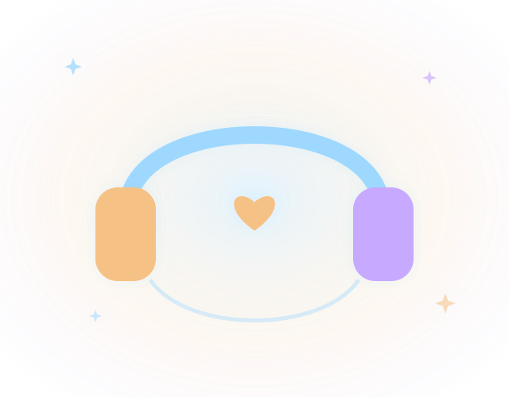
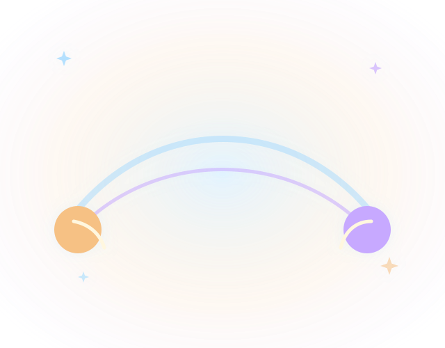
5. 互相发过的图片 6,731 张 stat-photos-msg
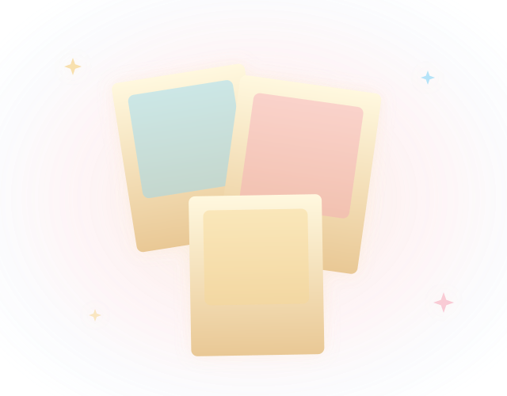
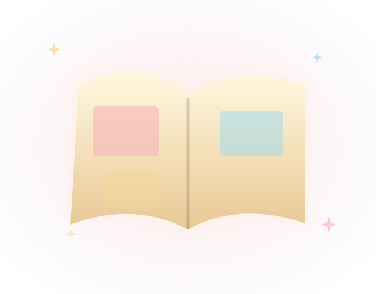
6. 发过的表情包贴纸 16,031 个 stat-stickers
7. 你最常说的三个词 stat-top3-you
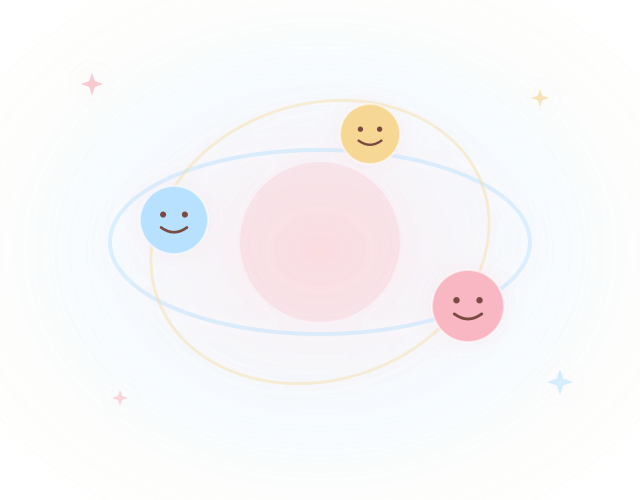
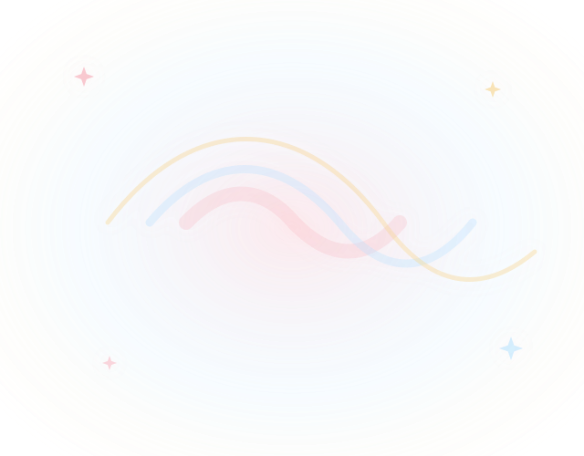
8. 我最常说的三个词 stat-top3-me
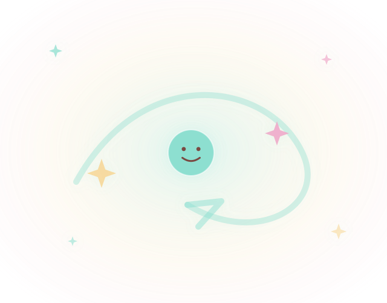
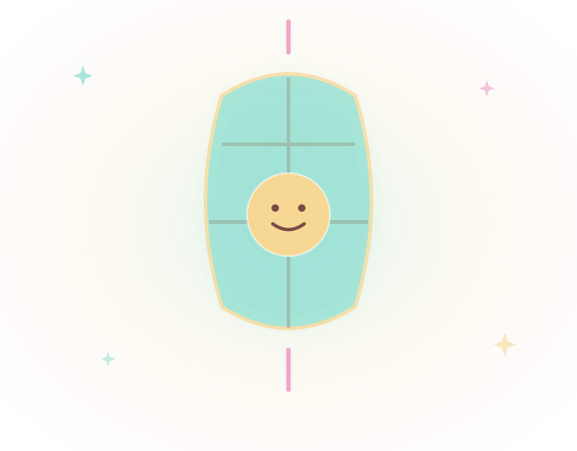
9. 你最喜欢叫我 stat-nickname-you
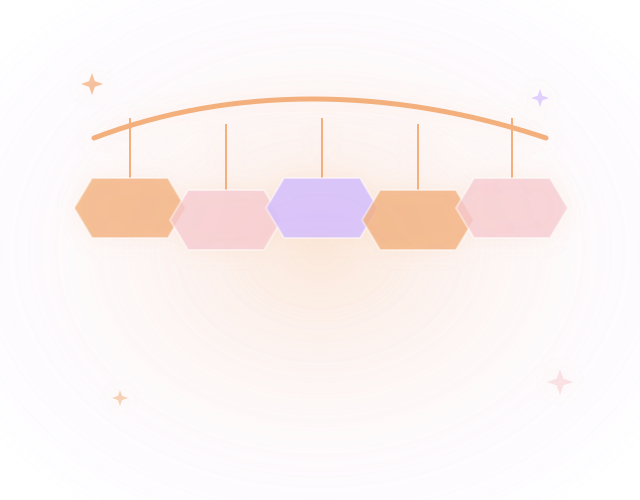
10. 我最喜欢叫你 stat-nickname-me
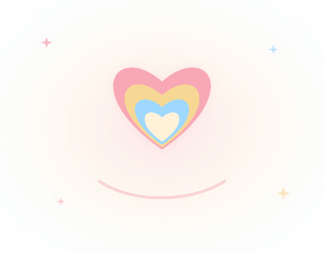
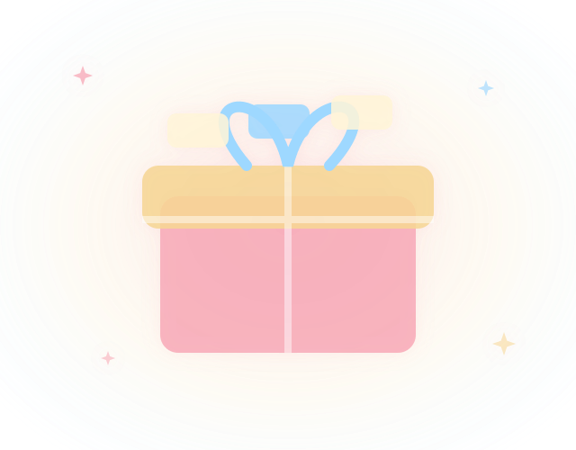
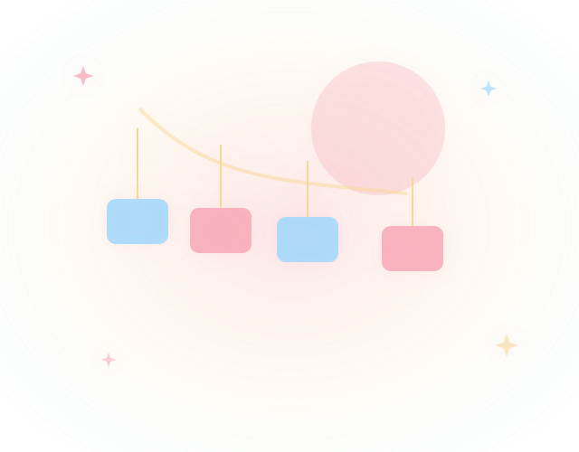
11. 我们叫过「嘟嘟」 stat-dudu
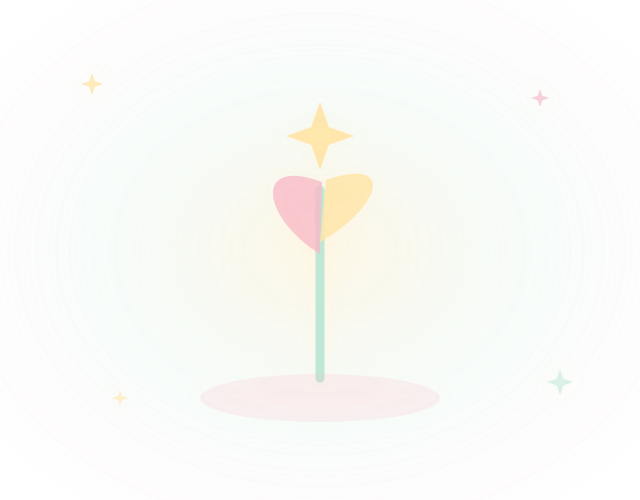
12. 说过的甜话 stat-sweet
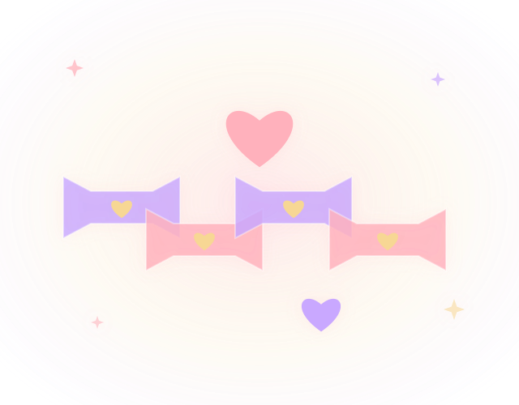
13. 问你吃饭了没 stat-eat
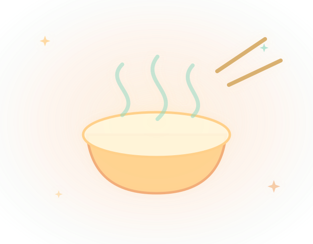
14. 你问过的「加班么」 stat-overtime
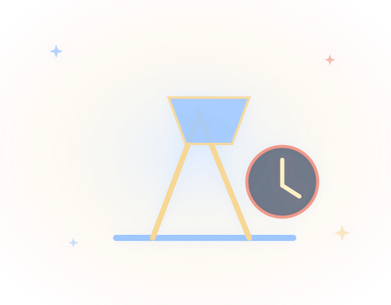
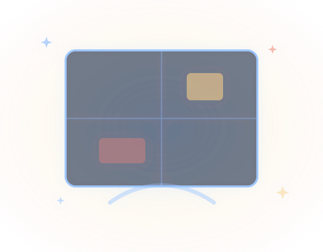
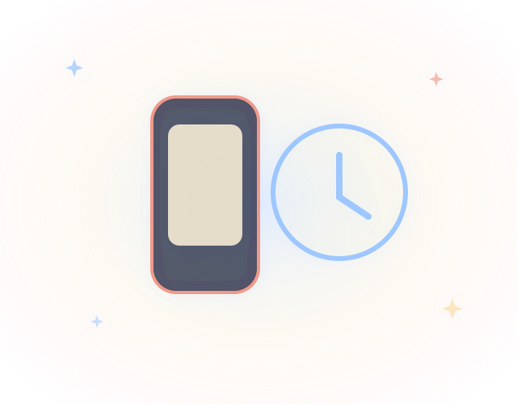
15. 远方的挂念 stat-far
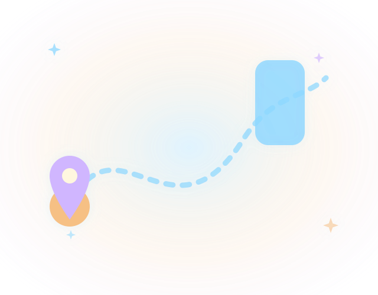
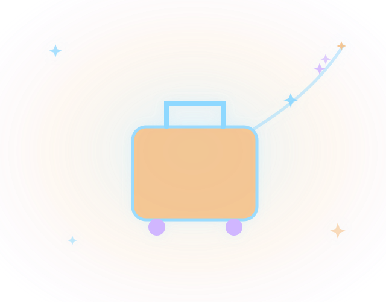
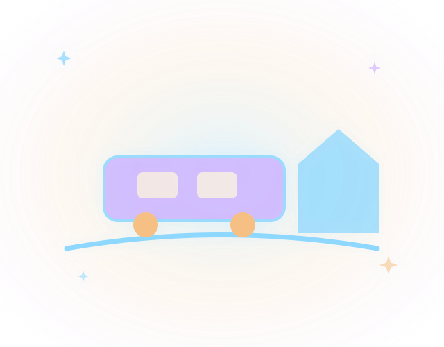
16. 陪你搞学术 stat-academia
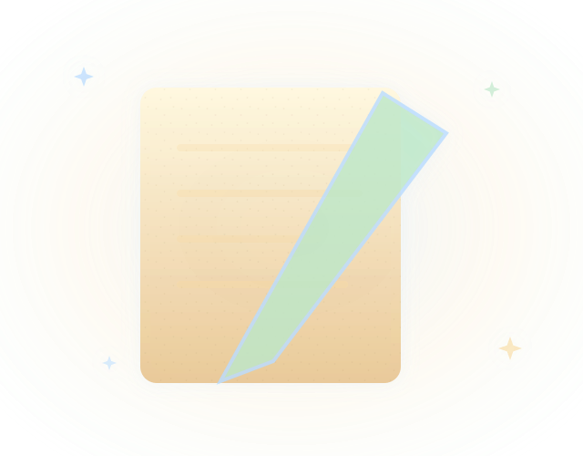
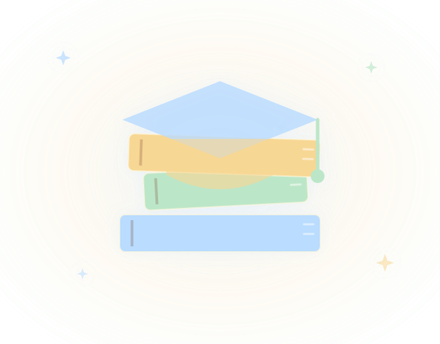
17. 陪我找工作 stat-job
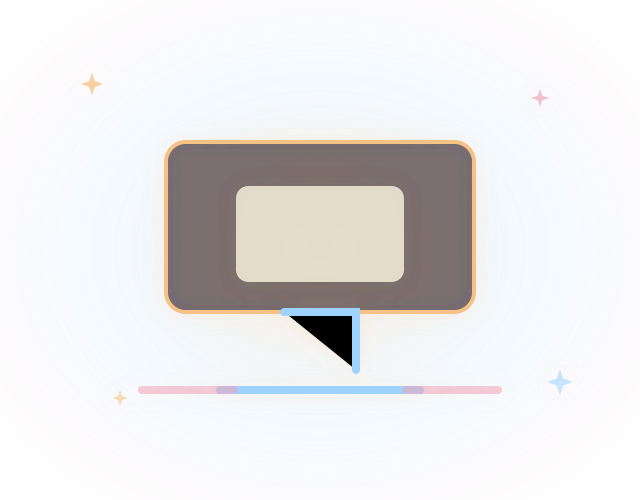
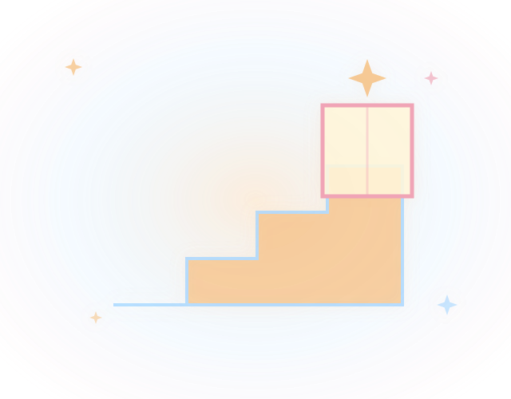
18. 聊过的「便便」 stat-bianbian
